PCTO · Anno scolastico 2025 / 2026
Due esperienze che hanno lasciato il segno: Madrid, tra storia e libertà, e Maristaer a Grottaglie, tra aviazione e professionalità.
FSL · Madrid
Madrid non è stata solo una gita scolastica — è stata una delle esperienze più significative della mia vita. Lontani dai professori per la maggior parte del tempo, abbiamo esplorato la città in autonomia, imparando a orientarci, a gestire il tempo e a prendere decisioni in gruppo.
Ho conosciuto compagni di scuola che non avevo mai frequentato prima, e con loro ho stretto legami autentici, esplorando strade nuove con la stessa curiosità con cui ci si avvicina a una persona nuova.
«Un evento più unico che raro — non avevo mai vissuto un'esperienza bella come questa.»Pensieri su Madrid
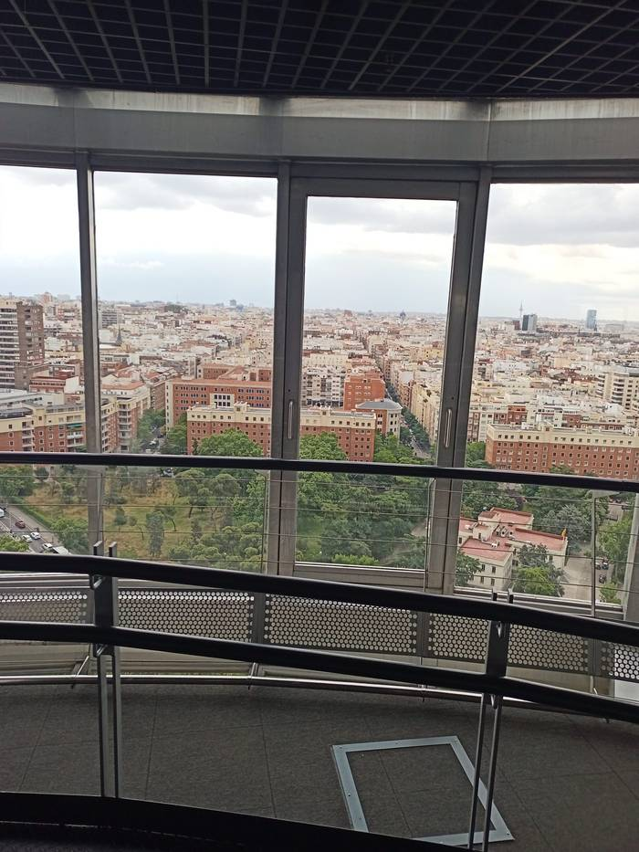
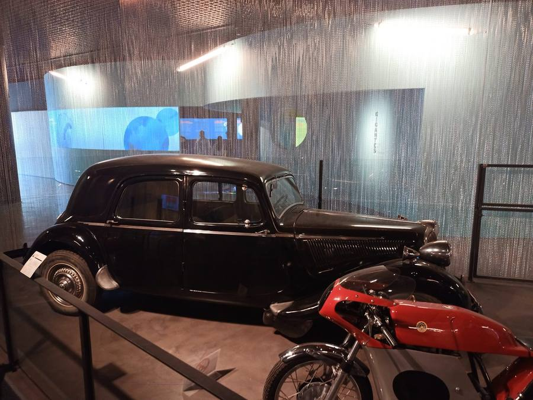
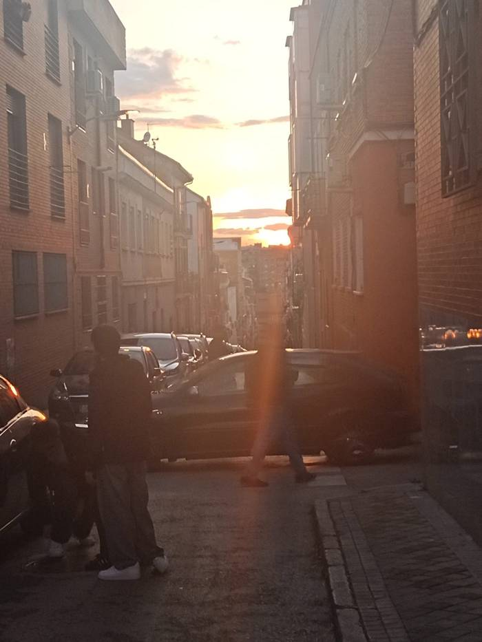
I posti visitati
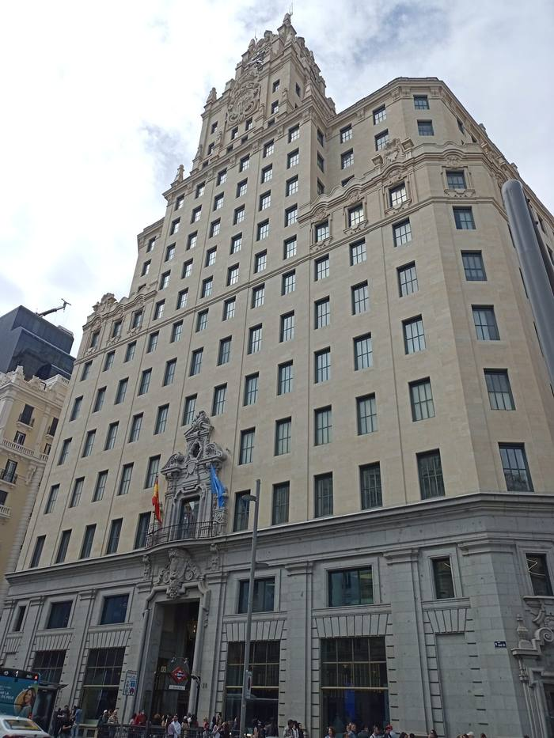
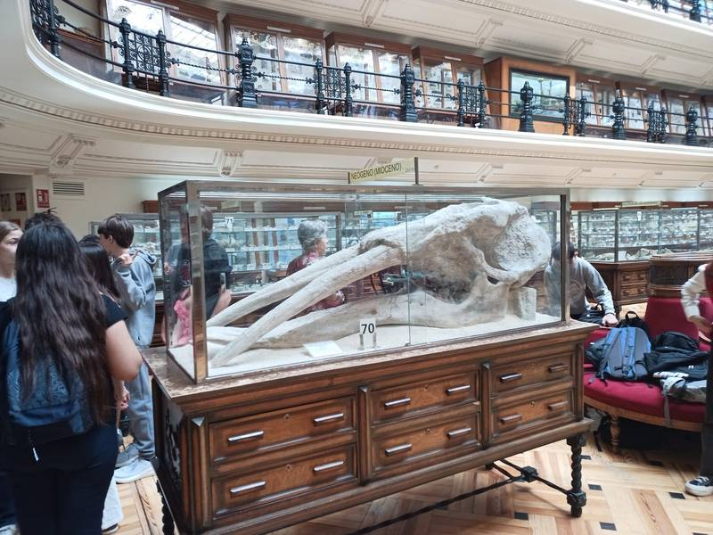
La sensazione d'indipendenza
Per la maggior parte del viaggio eravamo senza supervisori: liberi di scegliere dove andare, quando fermarci, cosa mangiare. Una libertà che si è rivelata anche una responsabilità — quella di organizzarsi, rispettare gli altri e fare scelte ragionate.
È stato il primo viaggio in cui ho capito davvero cosa significa essere autonomi. E l'unica guida erano i compagni con cui stavo vivendo quei giorni.
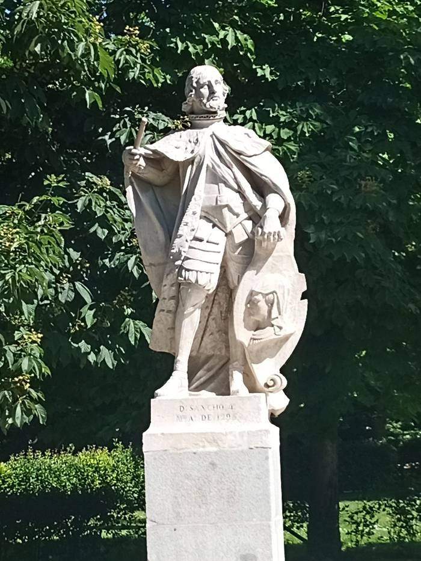
Escursione fuori Madrid
Il posto preferito
Toledo è stata la tappa che mi ha colpito di più. L'antica capitale della Spagna sorge su una collina circondata dal Tago, con strade strette, torri mozarabiche e chiese gotiche che convivono in un paesaggio unico.
Camminare tra i vicoli medievali, salire sulle mura e guardare il ponte di San Martín riflesso nel fiume: sono momenti difficili da descrivere, ma facili da ricordare.
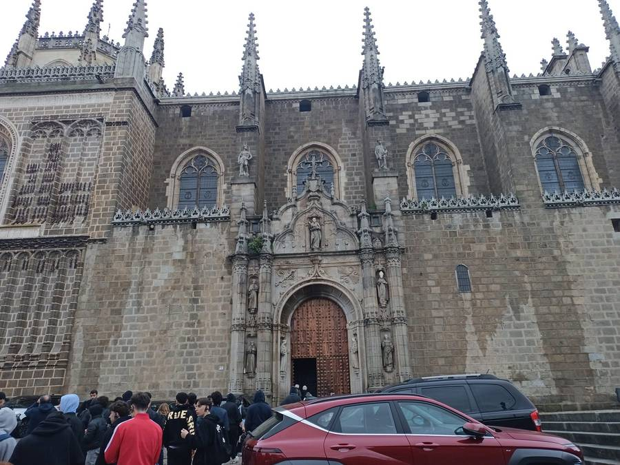
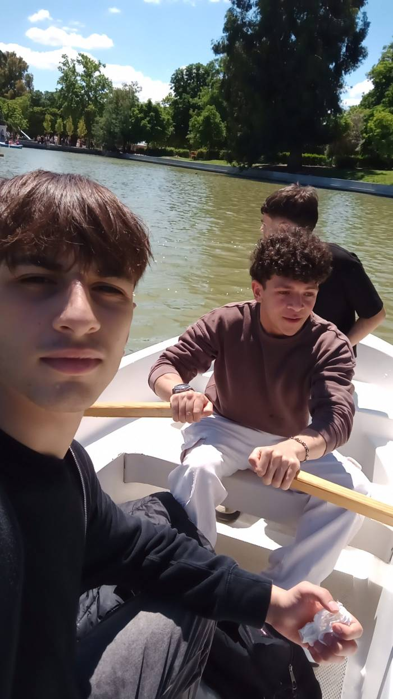
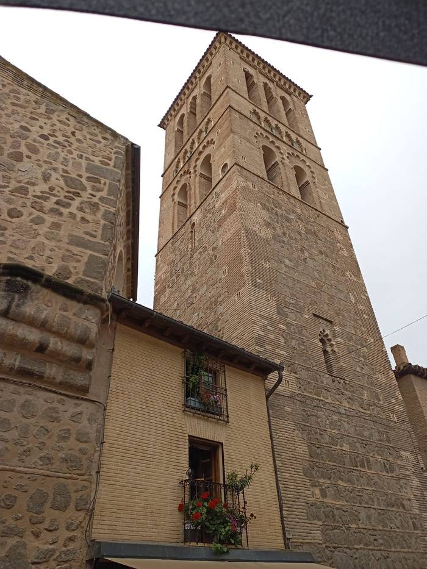
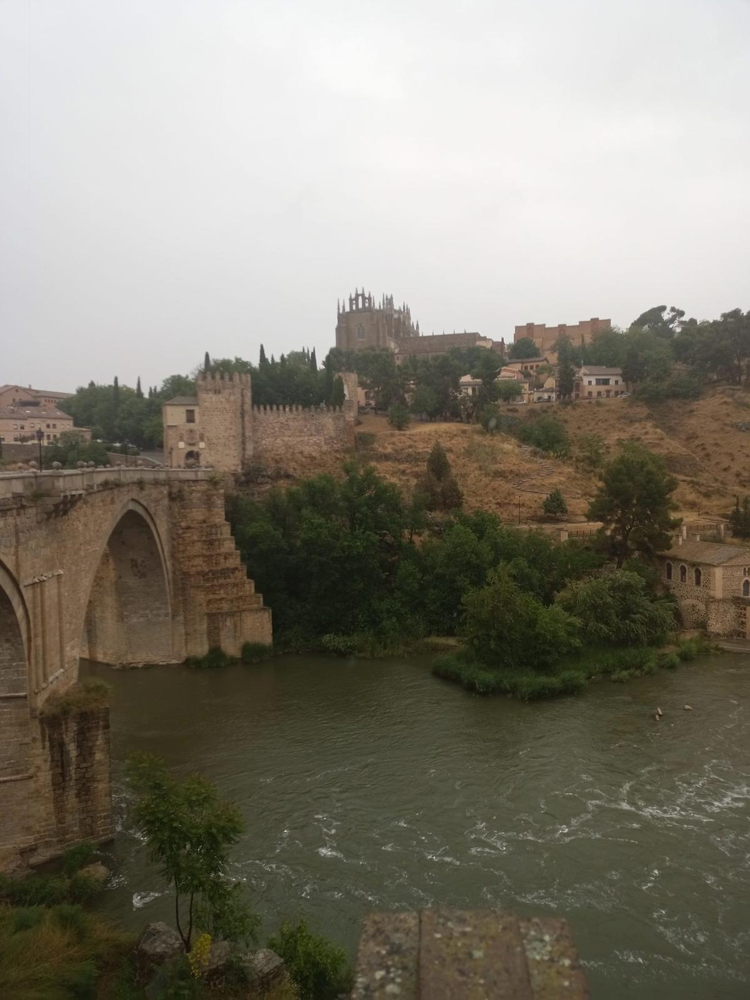
Visita istituzionale · Madrid
Uno degli incontri più interessanti organizzati dalla scuola è stato quello alla Fundación Telefónica, sul Paseo de Recoletos. Non un museo tradizionale, ma uno spazio aperto alla comunità dove tecnologia, arte e creatività si incontrano.
All'interno abbiamo potuto esplorare esposizioni interattive sulla storia delle telecomunicazioni e sulla trasformazione digitale, attraverso installazioni che mescolano passato e futuro in modo sorprendente.
Ciò che mi ha colpito di più è la filosofia dello spazio: chiunque può entrarvi per lavorare, studiare o semplicemente incontrarsi. Un posto pensato per abbattere le barriere tra azienda e cittadini, tra tecnologia e cultura.
È stata un'occasione per riflettere su come le grandi aziende possano restituire qualcosa alle città in cui operano.
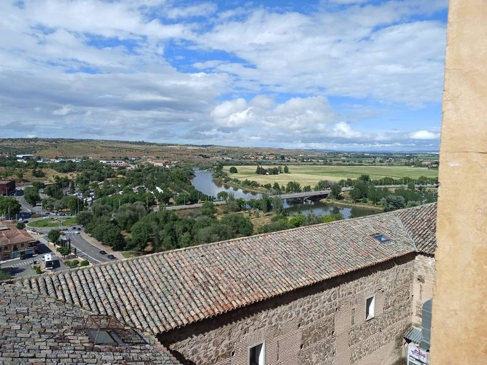
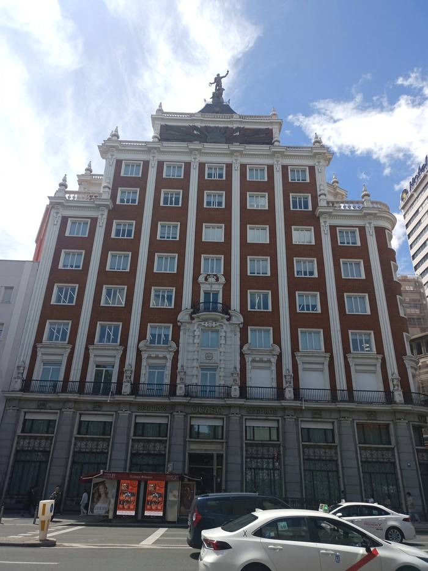
PCTO · Stazione Aeromobili della Marina
La seconda grande esperienza dell'anno è stata la settimana trascorsa alla Stazione Aeromobili della Marina Militare a Grottaglie, nel cuore della Puglia — una base operativa a pochi chilometri da casa.
Per cinque giorni abbiamo avuto accesso a un ambiente normalmente inaccessibile al pubblico, scoprendo un mondo fatto di rigore, precisione e competenze altamente specializzate.
Militari, guardie, aviatori e tecnici della manutenzione ci hanno accolto con professionalità, spiegandoci nel dettaglio le loro mansioni e mostrandoci le diverse sezioni della base, ognuna con un ruolo specifico nell'operatività dell'intera struttura.
È stata un'esperienza che ha cambiato la mia percezione di questo settore: sotto l'uniforme, ho visto persone con un mestiere appassionante e una responsabilità enorme.
Ogni velivolo segue un ciclo rigoroso di ispezioni e interventi tecnici. Abbiamo visto da vicino come si gestisce la manutenzione programmata e straordinaria degli elicotteri della Marina.
Una base militare funziona come un sistema complesso: ogni reparto è interdipendente dagli altri. La coordinazione tra personale, logistica e mezzi è ciò che garantisce la continuità delle operazioni.
Oltre alla sicurezza fisica, la base presidia sistemi informatici critici. Proteggere i dati operativi da minacce cyber è oggi priorità tanto quanto la difesa perimetrale.
Il momento più formativo è stato il dialogo diretto con chi lavora in quella base ogni giorno: storie di carriera, scelte di vita e competenze costruite negli anni.
Pensieri finali
Le esperienze PCTO di quest'anno non mi hanno solo avvicinato al mondo del lavoro — mi hanno aiutato a capire chi sono quando sono lontano da casa, quando devo arrangiarmi, quando scopro qualcosa di nuovo per la prima volta. Questo, più di qualsiasi nozione appresa in classe, è ciò che porterò con me.